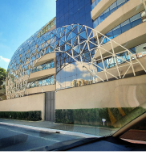
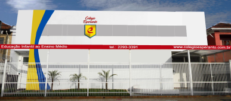
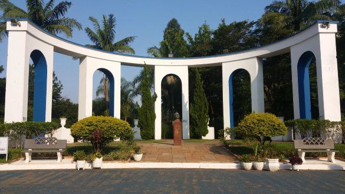

Educação
Colégio Agostiniano Mendel
Iniciado em 1984, atende desde o Infantil até o Ensino Médio com cerca de 4.200 alunos. Um grande diferencial do colégio são seus cursos extracurriculares. Além disso, o colégio conta com uma enorme infraestrutura para receber os alunos e proporcionar as atividades. Então, se você está procurando uma escola bem conceituada vale a pena conferir.
Colégio Esperanto
O Colégio Esperanto trabalha com o sistema ETAPA, por conta desse sistema muitos alunos são aprovados nos vestibulares. Portanto, se você está procurando um colégio para o seu filho, esse em específico atende desde o berçário até o Ensino Médio. Aliás, o Colégio Esperanto também conta com projetos e aulas diferenciadas, como: dança, culinária e etc.

Lazer
Ceret
O gigante Parque Esportivo dos Trabalhadores, antigo Parque Ceret, é outra ótima opção para curtir os momentos livres com muita diversão e liberdade.
Com mais de 268 mil m², o Parque conta infraestrutura completa para a prática de esportes e lazer para a família. São três campos oficias de futebol, quadras poliesportivas, ginásio, pista de atletismo, sala de ginástica, piscina e muito mais.
Também são disponibilizados quiosques para quem não deixa de lado o bom e velho piquenique